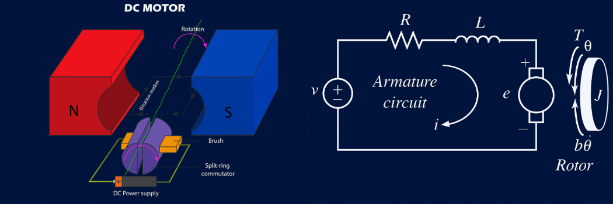
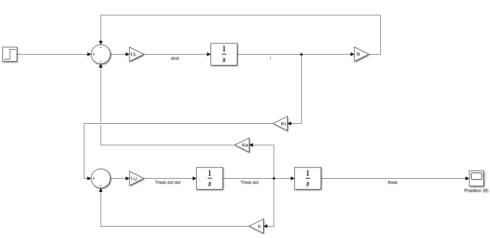
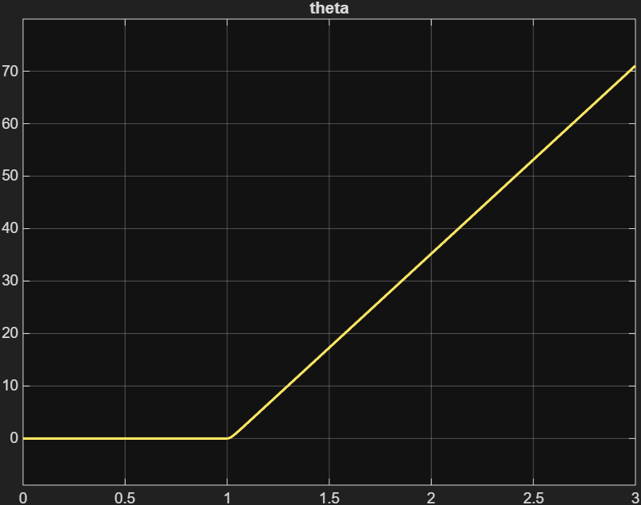
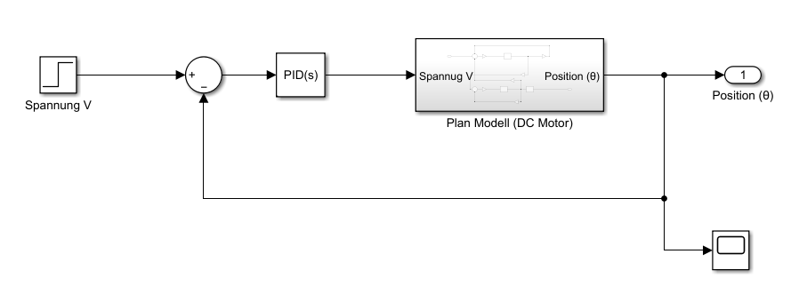
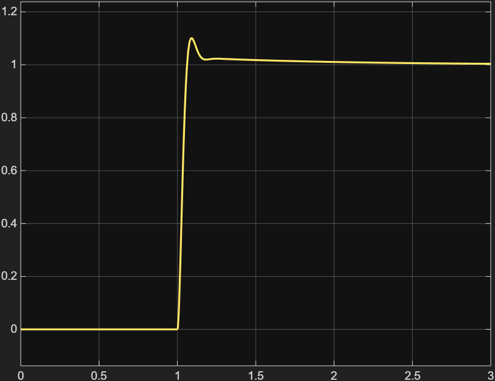
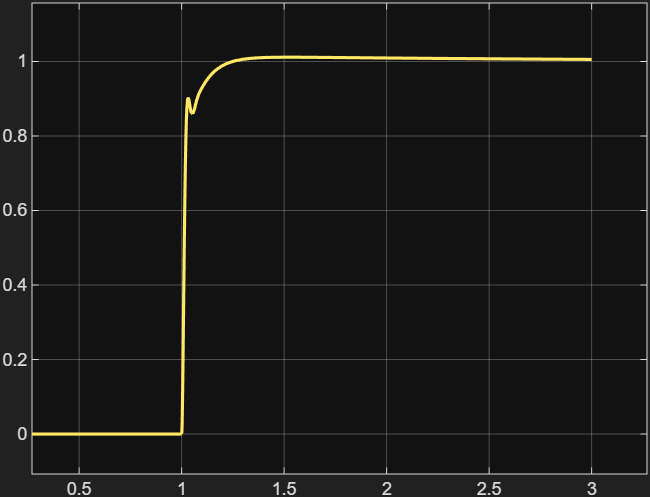

1- Theoretische Grundlagen
Der DC-Motor wandelt elektrische Energie in mechanische Bewegung um. Sein Verhalten wird durch zwei gekoppelte Gleichungen beschrieben:

Elektrische Gleichung
Aus dem 2. Kirchhoffschen Gesetz und der Faradayschen Induktionsgleichung:
\[ V(t) = L \frac{di(t)}{dt} + R\,i(t) + K_e\,\omega(t) \]Umgeformt:
\[ L \frac{di}{dt} = V - \left(R\,i + K_e \frac{d\theta}{dt}\right) \]- \( V(t) \) - angelegte Spannung
- \( L \frac{di}{dt} \) - Induktionsspannung durch Stromänderung
- \( R\,i(t) \) - Spannungsabfall am Wicklungswiderstand
- \( K_e \frac{d\theta}{dt} \) - Gegen-EMK, proportional zur Winkelgeschwindigkeit
Mechanische Gleichung
Aus dem 2. Newtonschen Gesetz für Rotation:
\[ J \frac{d^2\theta}{dt^2} = K_t\,i(t) - b\,\frac{d\theta}{dt} \]- \( J \) - Trägheitsmoment des Rotors
- \( K_t\,i(t) \) - elektromagnetisches Drehmoment
- \( b\,\omega(t) \) - viskose Dämpfung (Reibungsverluste)
PID-Regler
Ziel: Positionsfehler \( e(t) = \theta_{ref}(t) - \theta(t) \) minimieren.
\[ u(t) = K_p\,e(t) + K_i \int e(t)\,dt + K_d\,\frac{de(t)}{dt} \]Die Parameter \( K_p \), \( K_i \) und \( K_d \) wurden durch manuelles Tuning und die Ziegler–Nichols-Methode bestimmt.
2- Simulink-Modell & Experimente
Experiment 1 : Ohne Regler (offener Kreis)


Beobachtungen:
- θ steigt nach dem Step-Eingang (t ≈ 1 s) linear und unbegrenzt an.
- Kein stationärer Zustand - der Motor dreht sich ständig weiter.
- Kein Ausgleich von Störungen oder Reibung möglich.
→ Ein Regler ist zwingend notwendig, um die Position an einem Sollwert zu halten.
Experiment 2 : PI-Regler (Kp=1, Ki=1, Kd=0)


Beobachtungen:
- θ erreicht den Sollwert (1 rad) nach t ≈ 1,5 s.
- Überschwingen von ~10–20 % durch zu hohe Integraldynamik.
- Kein D-Anteil → fehlende Dämpfung → Nachschwingen.
Experiment 3 : Optimierter PID-Regler (Kp=1, Ki=0.5, Kd=0.05)

Beobachtungen:
- Überschwingen nahezu eliminiert.
- Einschwingzeit ca. 1 s — schnell und stabil.
- Kein stationärer Fehler (\( \theta \rightarrow 1\,\text{rad} \)).
3- Zusammenfassung
Vergleich der drei Konfigurationen
| Konfiguration | Verhalten | Überschwingen | Einschwingzeit | Bemerkung |
|---|---|---|---|---|
| Ohne PID | θ wächst unbegrenzt | — | — | Kein Feedback → instabil |
| PI (1, 1, 0) | Erreicht Sollwert | ~10–20 % | ~1,5 s | Zu aggressiv, übersteuert |
| PID (1, 0.5, 0.05) | Schnell, stabil | < 2 % | ~1 s | Optimal abgestimmt |
Grenzen des Modells
- Lineares Modell : keine Sättigung, keine Nichtlinearitäten berücksichtigt
- Keine äußere Last modelliert
- PID-Parameter manuell getunt : kein automatisches Optimierungsverfahren
Das Modell basiert auf idealisierten Parametern. Eine Validierung mit einem realen DC-Motor
(Messung von Strom, Spannung und Position) wäre der nächste Schritt zur Verifikation.
Skills
MATLAB
Simulink
PID-Regelung
Systemmodellierung
Closed-Loop Control
Reglerentwurf
Signalanalyse
Stabilitätsanalyse
Technische Dokumentation